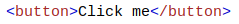

3. Contoh Basic HTML
Jangan khawatir jika contoh ini menggunakan tag yang belum Anda pelajari.
Anda akan belajar tentang mereka di bab-bab selanjutnya.
Dokumen HTML
Semua dokumen HTML harus dimulai dengan deklarasi tipe dokumen: <! DOCTYPE html>.
Dokumen HTML itu sendiri dimulai dengan <html> dan diakhiri dengan </html>.
Bagian yang terlihat dari dokumen HTML adalah antara <body> dan </body>.
Contoh:
Headings HTML
Judul HTML didefinisikan dengan tag <h1> hingga <h6>.
<h1> menentukan judul yang paling penting. <h6> mendefinisikan tajuk paling tidak penting:
Contoh:

Paragraf HTML
Paragraf HTML didefinisikan dengan tag <p>:
Contoh:
HTML Links
Tautan HTML didefinisikan dengan tag <a>:
Contoh:

Tujuan tautan ditentukan dalam atribut <href>.
Atribut digunakan untuk memberikan informasi tambahan tentang elemen HTML.
Anda akan belajar lebih banyak tentang atribut di bab selanjutnya.
HTML Images
Gambar HTML didefinisikan dengan tag <img>.
File sumber (src), teks alternatif (alt), lebar, dan tinggi disediakan sebagai atribut:
Contoh:
Tombol HTML
Tombol HTML ditentukan dengan tag <button>:
Contoh:
HTML Lists
Daftar HTML didefinisikan dengan tag <ul> (unordered / bullet list) atau <ol> (daftar terurut / bernomor), diikuti oleh tag <li> (daftar item):
Contoh: